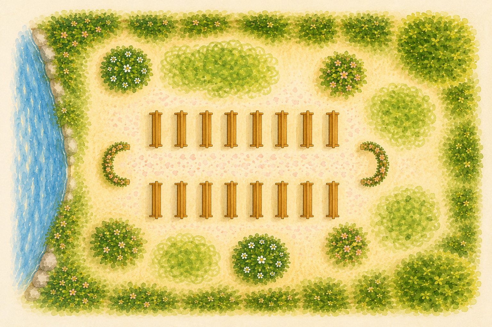
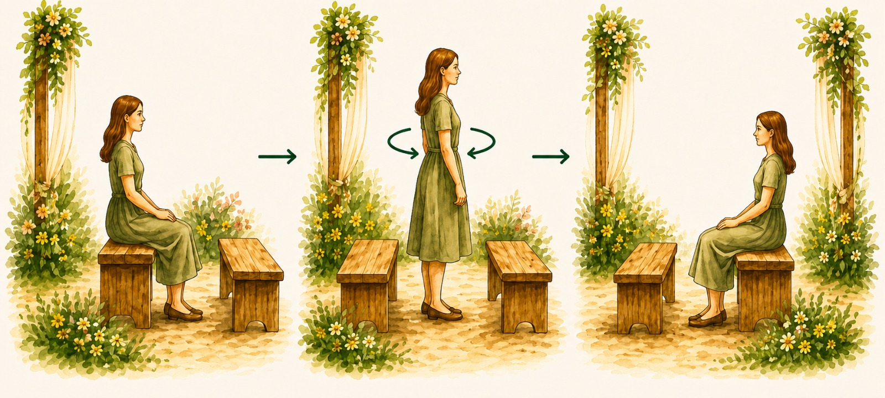

Program
Příjezd
10:00
Obřad
11:00

Fotografování
Oběd
12:30
Hry
Dort
Večeře
18:00
První tanec
20:00
Ubytování
Počítáme s tím, že někteří z vás budou chtít i přespat.
Pro kempristy je zde oblíbený parčík, případně jízdárna.
Pro ostatní se najde ubytování ve společných ložnicích v domě, nebo v penzionu.
Informace o obřadu
Pro všechny z nás to bude výjimečná svatba, při které se propojí dvě různé národnosti i tradice. Aby vše proběhlo co nejpříjemněji a bez zmatků, rádi bychom vám přiblížili průběh obřadu.
Obřad bude rozdělen do dvou částí a bude probíhat u dvou oltářů. Hosté budou usazeni na lavicích mezi nimi.

Začneme neoficiální částí obřadu, která bude věnována především nizozemským tradicím. V den svatby vás navedeme ke správnému oltáři a ukážeme vám, kam se posadit.
Po skončení první části se nejbližší rodina přesune uličkou k přední části druhého oltáře. Poté vás poprosíme, abyste se otočili a usadili na lavicích za sebou.

U druhého oltáře následně proběhne oficiální český obřad, během kterého si řekneme svá ano.
Po tomto slavnostním okamžiku si společně s matrikářem připijeme. Prosíme vás, abyste během přípitku i krátce po něm zůstali na svých místech. Následně projdeme uličkou kolem vás a budeme rádi, když se k oslavě připojíte foukáním bublin z bublifuků, které pro vás budou připravené.
Na konci uličky se zastavíme, abychom přijali vaše gratulace. Poté můžete pokračovat stejným směrem do prostor, kde se bude podávat oběd.
Dress code
Hlavním tématem svatby je příroda.
Dress code je semi-formal, s barvami inspirovanými lučními
květy.

Svatba je radostná událost, proto vás prosíme, abyste nevolili černou nebo velmi tmavé barvy, a zároveň se vyhnuli bílé, krémové či béžové, ať má nevěsta prostor zazářit.
Pro muže:
společenské kalhoty (ne džíny) a košile, případně sako, ale bez vesty (protože i ženich chce vyniknout).
Pro ženy:
elegantní šaty (ke kolenům, midi nebo maxi), stylové kostýmy nebo moderní overal.
Obřad a část programu se bude konat venku na trávě a nerovném a měkkém terénu, proto nejsou vhodné podpatky.
Telefon a sociální sítě
Milí hosté,
budeme moc rádi, když si náš den užijete naplno s námi — bez telefonů v ruce a ne přes displej. Prosíme vás proto, abyste během obřadu nechali své mobilní telefony zcela odložené a byli přítomní s námi v daném okamžiku. Během oslavy budeme rádi, když je necháte co nejvíce stranou.
Nevadí nám, když budete na sociálních sítích sdílet své outfity nebo společné momenty. Jen vás prosíme, abyste nezveřejňovali fotografie nás novomanželů. O všechny krásné profesionální fotografie se s vámi po svatbě moc rádi podělíme sami.
Děkujeme, že to respektujete a pomůžete nám vytvořit opravdu osobní a intimní den. ♡
Dary
„Máme radost, že s vámi můžeme sdílet začátek našeho společného života. Vaše přítomnost na svatbě je pro nás tím nejkrásnějším darem. Pokud byste nás chtěli potěšit ještě něčím navíc, uvítáme příspěvek na náš budoucí domov či svatební cestu.“